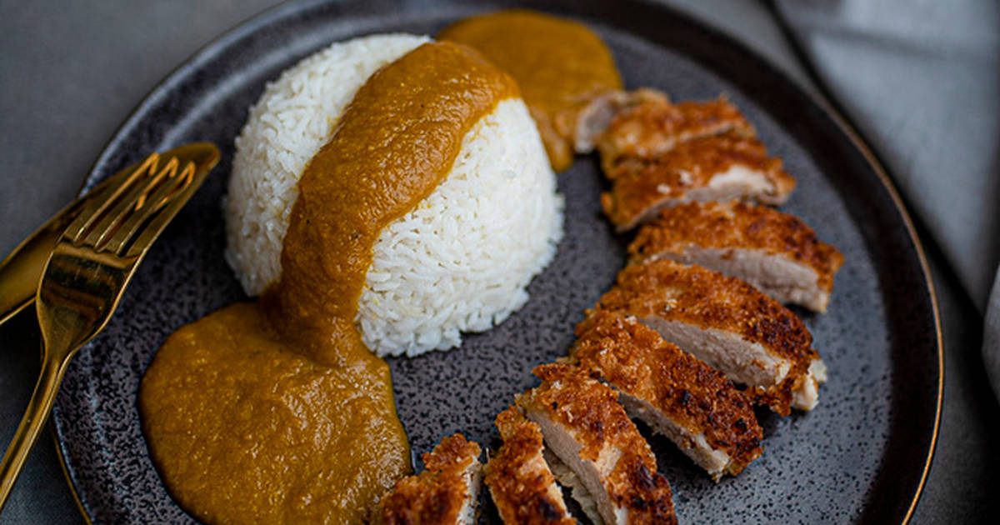

Chicken Katsu Curry

Description
The hard work pays off in this recipe.
The secret is the sauce, which is flavourful, fragrant and rich. You can make a vegetarian version too. Everyone loves it in my house, it's usually a quiet meal where you will only hear the - Mmmmmmm!!!!!
Ingredients
6 People
Sauce
- 3 small onions
- 4 garlic cloves
- 3 medium carrots
- 2 TSP curry powder (here is up to you how spicy it will be)
- 2 TBSP plain flour
- 500 ml chicken stock or vegetable stock for the veggie version
- 1 TBSP honey
- 2 TBSP soy sauce
- 1 bay leaf
- 1 TSP garam masala
- 2 TBSP sunflower oil for simmering
Breaded chicken
- 4 chicken breasts
- 1 garlic clove crushed
- 1 beaten egg or 2
- 100 g breadcrumbs or panko breadcrumbs
Cooking Instructions
- Put oil into a pot and sauté onion pieces until the edges start browning
- Add potato and carrot pieces to the pot and stir.
- Add water and bring it to a boil. Remove scum as it rises.
- Add curry roux and cook.
- Cook chicken cutlets and slice them
- Put cooked rice on one side of a serving plate, place cutlet pieces next to the rice
- Pour curry on the side next to the cutlet away from the rice
- Place a small amount of fukujinzuke on the plate